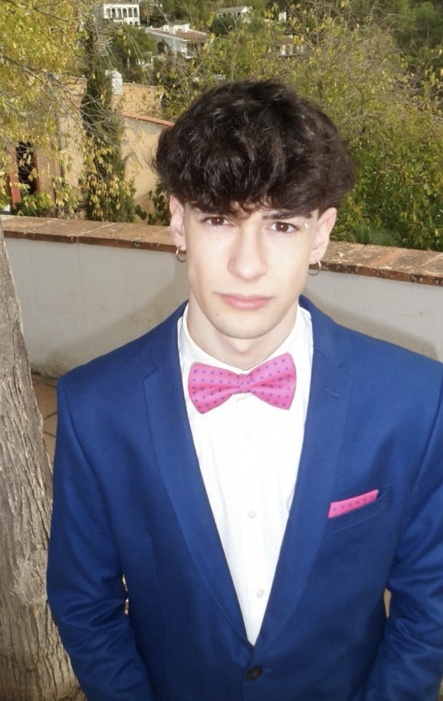

Ángel Fernandez, 20 anys
Ballarí de voguing, experimental i comercial femení
Ángel Fernandez es presenta com una persona “molt moguda” i plena d’energia. Per a ell, la dansa és una manera d’expressar allò que de vegades no surt amb paraules, però també una forma de connectar amb una altra part de si mateix. “No ballo jo, balla el meu alter ego”, explica.
Fa cinc anys que balla i assegura que el moment clau va arribar quan va veure el nivell dels seus amics de Barcelona. Aquella comparació no el va frenar, sinó que el va empènyer a marcar-se un objectiu: arribar algun dia a ballar amb ells. Des d’aleshores, la dansa ha anat ocupant cada vegada més espai en la seva vida.
Actualment, el ball forma part del seu dia a dia: munta coreografies, dona classe, rep formació i també balla per simple plaer. Tot i això, reconeix que el procés no sempre és fàcil. “El més dur és sentir que no és el teu lloc. En algun moment estaràs en un espai on sembla que tothom pot menys tu, però això també forma part de l’aprenentatge.”
“Una persona que no posa energia ni ànima en el que interpreta es nota des del primer pas.”
Per a Ángel, la tècnica i l’emoció no es poden separar. Considera que una coreografia només està ben executada quan existeix una harmonia entre totes dues. Primer s’han de memoritzar els passos, però després arriba el moment realment important: deixar de ser “un robot” i posar-hi essència pròpia.
“Deberíamos considerar perdidos los días en que no hemos bailado al menos una vez.” — Friedrich Nietzsche